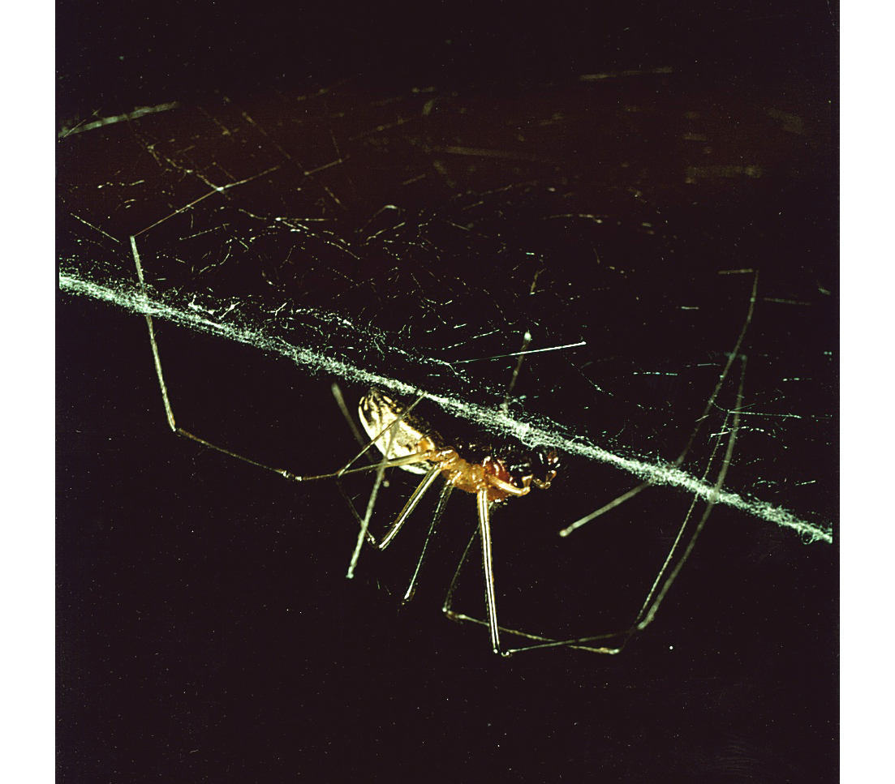
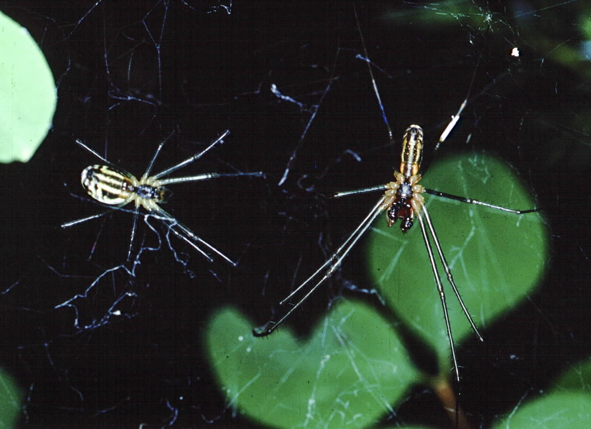
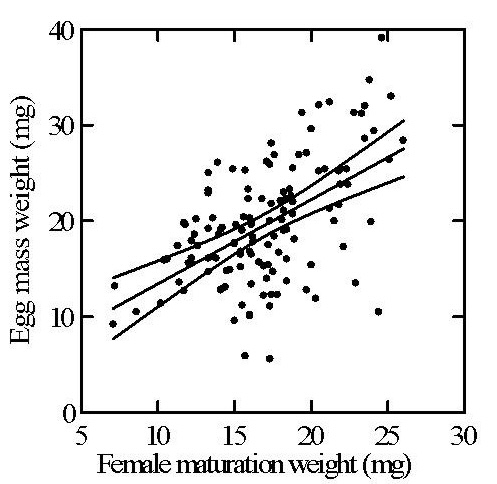
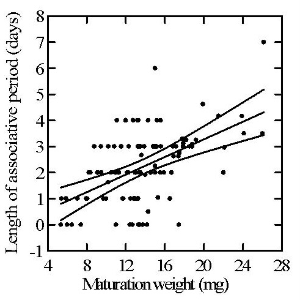

The Sierra dome spider (Neriene litigiosa, formerly Linyphia litigiosa) provides an exceptionally revealing living system for investigating sexual selection. Its transparent, dome-shaped webs are built in the forest shrub layer. Courtship and male–male contests are concentrated near the center of the dome, bringing female responses and the successive stages of mating into clear view. The deeper opportunity is to connect those encounters with the development of an individual, the contribution that individual makes to reproduction, and what the resulting offspring can accomplish.
I began this research at Flathead Lake Biological Station in northwestern Montana in 1980. Work with many dedicated assistants and collaborators has produced published studies of female signaling, male competition, multiple paternity, unequal sperm use, copulatory-courtship energetics, foraging benefits of remating, and offspring growth. The field observations, physiological records, individual histories, specimens, and molecular results provide a substantial foundation for further investigation. They do not come close to exhausting what this unusually accommodating spider can teach us.
Two connected questions now organize my plans. How do males develop coordinated combinations of behavior, physical capacities, physiology, and potentially useful microbial functions? And what do particular females learn about those combinations when selecting mates and the sires of their offspring? The female-centered purpose extends beyond predicting which male succeeds. I want to understand what her choices accomplish for her own lifetime reproductive success through the combined prospects of her brood.
My immediate focus is the individual developmental history and personality study begun in 2024–2025, and the beginnings of mating-system metagenomics. The longer-term program reaches into chemical ecology, host genetics, immune regulation, epigenetics, reproductive anatomy, sperm discrimination, and the development of offspring. These are intimately connected routes into the same biological problem, not a requirement that every new assistant or collaborator—and I am always looking for both (!!)—become proficient in every method before making a useful and potentially publishable contribution.
The account below distinguishes published findings and repeated natural-history observations from pilot work and proposed mechanisms. I use hypotheses to organize investigations, not to prescribe their results. A finding that the proposed genres do not recur, that a microbial association has a different function than expected, or that females use different information would still be a consequential discovery. This is a program in which successors should be able to build on my experience without inheriting an obligation to agree with me.
Participation in 2027 and beyond: I welcome scientific conversations with prospective assistants, collaborators, and successors. Field access, accommodation, supervision, and financial arrangements for possible summer 2027 participation remain to be confirmed. The descriptions of future fieldwork are proposed investigations, not announcements of confirmed placements.
The mating system · Current developmental work · Microbial relationships · Vibrometry · Additional projects · Working together

Late in the penultimate instar, a female undergoes a striking behavioral transition. Previously she has avoided males; now she allows close association near the center of her web. This associative behavior uniquely elicits overnight and multi-day guarding attempts. The measured associative period averaged 2.3 days, with an observed range of about half a day to five days. Its duration helps determine how many males contend for the opportunity to become her first mate.
New arrivals encounter the current guard, and an extended championship series develops. The male remaining with the female at her final molt is ordinarily her first mate and principal sire. Females maturing in daylight usually begin copulatory courtship within about twenty to thirty minutes, once the new exoskeleton is sufficiently hardened; those maturing at night generally wait until morning. The first mate does not need to elicit receptivity through precopulatory strumming. In the published paternity studies, first mates obtained about 70 percent of fertilizations on average, with considerable variation among females.
Why this matters: the female’s earlier behavior helps create the sequence of competition that determines which male is present at maturation. It connects a female’s developmental state with a prolonged test of male competitive capacities. The later female-choice question is what that tested male actually contributes, and how his contribution combines with those of secondary mates.
The championship is the usual natural route to the first mating, not a performance the female must witness before becoming receptive. Mature virgin females accept experimentally introduced males even when no championship has occurred on their webs. In an earlier field substitution experiment, small, competitively weak males replacing champions retained the first-mate paternity advantage. That result prevents us from treating first and secondary matings as repeated applications of one identical courtship-based assessment.
Associative behavior also leaves a useful question about information. A male knows that the female is approaching maturation, but he does not receive a precise countdown. I hypothesize that this imprecision helps sustain guarding and competition: highly precise information could make some females appear too far from maturation to be worth guarding. The separate skipping investigation described below asks whether females supply additional, encounter-specific information when rival males hesitate to engage.
Guarding males are highly effective kleptoparasites, appropriating much of the prey caught in a female’s web. An associative female therefore gives up feeding opportunities during the days preceding sexual maturation. Her investment in eliciting a more extensive championship has nutritional consequences. This creates a real tradeoff between the competitive testing of a prospective first mate and the resources available for her own growth and subsequent reproduction.

Even though egg sacs are produced much later, early adult condition still strongly predicts reproductive output. That makes prey loss before the final molt a genuine reproductive cost of associative behavior.

Heavier females can afford a longer period of guarding, kleptoparasitism, and male competition. In effect, they can invest more heavily in obtaining a more stringently tested first mate.
Taken together, these patterns suggest that females conditionally balance the benefits of a longer championship series against the costs of prolonged male presence. Better-conditioned females can invest in a longer associative period, while the loss of feeding opportunities could be more consequential to a female with fewer resources. The interest lies in how her own circumstances influence the competitive process she elicits, not merely in the number of male fights observed.
Associative behavior is therefore more than an incidental sign that a female is becoming mature. It is a costly contribution to the organization of mating opportunities. That natural-history foundation leads to the broader program: female state, the information supplied during encounters, the qualities of accepted males, and the reproductive consequences of accepting them belong in the same explanation.
After the first mating, a female commonly accepts one to three further mates while rejecting many other suitors. Secondary males normally elicit her receptivity through precopulatory web-strumming rather than by winning another championship. Her response to a suitor can be studied before genital coupling, and the male’s subsequent success as a sire can be investigated separately. Winning a fight, obtaining a mating, and fertilizing eggs are not interchangeable accomplishments.
Both first and secondary mates perform prolonged aspermic copulatory courtship before insemination. Their sperm-free pedipalps repeatedly couple and uncouple with the female’s genital structures. This is an energetically demanding and mechanically exacting performance, not simply a warmup. Males differ in the rate of successful couplings, unsuccessful attempts, persistence, and the physiological work needed to sustain performance. Body size alone does not capture those differences.
The male subsequently constructs a sperm web, deposits fresh semen, loads his palpi, and returns for insemination. The normal sequence supplies two distinguishable fresh semen deposits. That separation is an extraordinary experimental advantage: we can observe the courtship of a known male, collect his ejaculate before it enters the female, and investigate the relationship between the performance and the contribution. A hypothetical gating structure in the female’s sperm ducts supplies a further anatomical question, but its function has not been established as the explanation of the observed paternity patterns.
Copulatory courtship also changes the immediate economics of the encounter. My published work identified a female foraging advantage when the male is occupied with courtship rather than appropriating prey. A female can interrupt courtship to pursue food, and some males that complete mating ultimately obtain little or no paternity. A future microbial or biochemical benefit from transferred material could provide an additional explanation for such encounters, compatible with rather than replacing that nutritional benefit.
Genetic contributions must be followed through the actual sequence. Ejaculate delivery, admission to storage, persistence, fertilization, and survival of the resulting offspring are distinct transitions. An increase in a sire’s representation among surviving young need not mean that more of his sperm initially fertilized eggs. Modern parentage studies can retain these distinctions while connecting outcomes to the history and condition of both participants.
My current male-personality study began in 2024 and continued through the 2025 field season. We followed individually known males from sexual maturation through adult life, repeatedly observing three behavioral domains: nighttime exploration, precopulatory courtship and female responses, and male–male fighting. The principal combined analysis remains ahead. The next field phase would retain the established adult protocols, increase repeated observations per male, and begin each history earlier, approximately halfway to two-thirds through the penultimate instar—the last immature stage before sexual maturation.
Male maturation occurs earlier than female maturation and is concentrated near the beginning of the breeding season, whereas females mature over a much longer interval. I hypothesize that this favors males whose individual reproductive approaches are already reasonably well organized when early mating opportunities appear, making their preceding immature histories especially informative.
Here, personality means recognizable behavioral tendencies and characteristic adjustments, not one aggression score or an inflexible routine. A male may respond differently to a larger opponent than to an equal, yet make that adjustment in a manner that is recognizably his own. A female’s emphatic rejection may induce one male to reposition and continue, another to stand his ground, and another to stop courting and concentrate on food. The questions concern how those responses recur, how they change with experience and age, and how they fit the capacities of the particular male expressing them.
Penultimate males are homebodies. They build and occupy their own foraging webs and compete for productive sites. Those sites differ in height, prey traffic, openness, vegetation, and the attachment points available to support a strong web. A male’s experience of obtaining food, defending silk, and coping with competitors begins well before his first mating opportunity. Following known immature males would connect body mass and mass gain, web size and site quality, standardized responses to prey, and encounters with intruders of known mass. The point is to observe what he has been dealing with before asking why he becomes a particular kind of adult.
The final molt links those early histories to adult reproduction. Newly mature males usually remain on their webs for a day or two, sometimes longer, while their exoskeletons harden. Changes in coloration and increasing restlessness help us judge when nomadic life is approaching. We would collect each male shortly before departure, maintain him individually between observations, and continue staged courtship and fighting trials on natural field webs. Repeated nighttime exploration measurements would begin only after maturation: movement within a penultimate male’s own web is not the same behavior as an adult’s between-web search.
The adult field trials use two trained observers and data sheets developed through repeated practice. One maintains uninterrupted attention to the animals while the other concentrates on recording actions, timing, intensity, and the responses of the partner. Weighing males allows deliberate choice of comparable or mismatched opponents, so a male’s physical challenge remains part of the experiment. Each encounter also becomes part of his subsequent experience. This is a developmental record, not a collection of interchangeable tests performed on an unchanging animal.
The intended next season would therefore extend an existing longitudinal investigation, not inaugurate developmental research from scratch. The larger record could connect the young male’s growth and resource defense to his adult exploration, competition, courtship, and longevity. It would also give future physiological and molecular measurements an individual history to explain. A sophisticated assay on an anonymous spider answers a different question from the same assay attached to a male whose development and encounters we have followed.
I hypothesize that development helps a male assemble a coordinated constellation of behavioral, physical, physiological, and microbial capacities that makes the best of the cards he has been dealt. This is not merely bringing behavior into line with a fixed body. Neural, metabolic, and immune regulation may change in relation to one another; microbial functions could extend what the male can sustain, while his own regulation affects which associations remain useful. Experience may help tune the resulting organization as he learns what he can accomplish with different rivals and females. The behavioral individuality involved is what I refer to as intrasexual reproductive neurodiversity, expressed within the organization of the whole male.
I use “genre” to describe a potentially recurring cluster of male reproductive trait combinations. These are whole-organism profiles, not personality categories based on behavior alone. Two males could share a broad pattern of capacities while differing substantially in developmental history, detailed courtship style, physiological organization, or microbial associates. Some individuals may resemble more than one genre. The hypothesis concerns recurring, measurable organization with overlapping boundaries, not a population of identical copies or a single ranking from inferior to superior.
Nor am I proposing rigid categories of males confined to highly restrictive mating tactics. Every male retains a mixed, opportunistic mating strategy. A serial championship winner can subsequently court an already-mated female. A male with limited fighting prospects can take an available first-mating opportunity. The proposed advantage is an organization that makes him particularly useful and persuasive to females for whom his offerings have value, while retaining his ability to take a decent shot at other opportunities. Genres would describe recurring forms of that organization within the shared repertoire.
This proposal has a female-centered evolutionary rationale. If females repeatedly benefit from complementary kinds of paternal contribution, their responses could help sustain selection for several broad male reproductive profiles. But that correspondence need not be harmonious. A female’s interest concerns her whole brood; a male’s return concerns his own descendants. He might benefit from being selected while not benefiting from the precise paternity share that would best serve her. The investigation must distinguish the participants’ shared reproductive interests from conflicts over mating effort and the allocation of paternity. I expect those conflicts to be consequential even where the interaction looks highly cooperative.
Similar visible performances need not reveal identical capacities. Two males with different courtship styles might sustain related combinations of metabolic and immune functioning, whereas two performances that look much alike might depend on different physiological arrangements. A package effective for one male could be costly or developmentally unattainable for another. The genre framework gives us a reason to investigate those relationships rather than assume that every deviation from an ideal performance is an imperfection.
The locally dense populations characteristic of Sierra domes may help make this differentiation viable. A male rejected by one female can encounter another for whom his offering is useful; a female can reject a redundant contribution and encounter another suitor. Functional specificity could therefore pay without making every male equally attractive to every female. Excessive specificity would still carry a cost if suitable recipients became too scarce. I hypothesize that recurring encounter opportunities could help maintain distinguishable but overlapping offerings, the multimodal female sensory mechanisms that recognize them, and the morphological and physiological adaptations that allow her to use them selectively to serve her best interests. This predicts integration among male organization, informative credentials, and realized contributions—not simply more matings at higher density.
Multivariate profiles and repeated observations would let us test whether recognizable, potentially overlapping groupings recur in additional individuals and seasons. The alternative is also informative: male traits might vary in coordinated ways without forming reproducible groupings. Candidate genres would be characterized from measured traits and then examined for their developmental origins and reproductive consequences. Finding a cluster would identify a pattern to explain; linking it to female evaluation and offspring outcomes would investigate why it matters.
Most females accept only a few of the many suitors they encounter, and those mates usually obtain very unequal shares of fertilizations. Why these particular males, and why those particular shares? My working hypothesis is that a female benefits from a selectively assembled, bounded diversity of paternal contributions, not simply repeated copies of one superior male. What an additional sire offers may depend on her own constitution, reproductive health, previous mates, and the ecological circumstances her offspring will encounter.
The objective I have in mind is expected whole-brood fitness: the combined prospects of her offspring for surviving, developing, and eventually reproducing. Merely adding genetic diversity is not an explanation. We need to identify what a particular mixture accomplishes. Some contributions might improve performance in different circumstances; others might reduce shared vulnerability to a challenge that would otherwise affect most of the brood in the same way. Improvements in expected performance and protection against near-total failure are related possibilities, not interchangeable claims.
The different reproductive schedules of sons and daughters make this question especially interesting. A male may obtain substantial prospective paternity early, with his sperm surviving after his death. A daughter must remain reproductively functional through egg development and oviposition. The earlier physiological records motivate a specific hypothesis: inherited determinants favoring strong early male performance could sometimes have costs for later durability. That would not make strong fighters generally poor sires. It would make the sex, developmental stage, and circumstances in which a contribution is expressed essential to evaluating its value.
Females also need not be interchangeable evaluators. A male might become more valuable to one female after a change in her health, but less valuable to another whose previous mates supplied a similar contribution. I want to connect repeated female responses to independently measured condition, mating history, sperm use, and offspring outcomes. The decisive observation would be a predictable change in the value of a characterized contribution, not simply an increase or decrease in willingness to mate.
My 1998 study supplies an existing connection to offspring performance. Female mate number and the body mass of the known or most likely sire were positively and independently associated with early offspring growth after accounting for measured maternal and rearing effects. I chose early growth because it integrates physiological functioning during a particularly vulnerable period, when becoming slightly larger can change a spiderling’s ability to obtain food, withstand environmental difficulty, and avoid some predators. Future studies could extend that foundation to juvenile survival, adult trajectories of sons, and the ability of daughters to sustain viable eggs through reproduction.
My longer-term interest includes comparisons between mothers and daughters: whether recurring patterns of mate and sire preference are inherited, reconstructed during development, or both. A female’s lifetime choices and the consequences of those choices would remain connected. The program is not complete merely when a statistical model predicts which male wins more fertilizations; the deeper question is why selection favors the female responses producing that outcome.
I use mating-system metagenomics as an organizing term for an integrated investigation of development, microbial ecology, reproductive performance, mate and sire selection, and offspring fitness. Sequencing can tell us which microbial associates and potential functions are present. The scientific purpose is larger: to understand how those relationships participate in the life of a known individual, and how another individual evaluates what they make possible.
The central hypothesis is not that a male first develops a personality and then happens to acquire a microbiome. It is that behavior, physiology, and microbial associations can develop interdependently. A useful microbial function could help him sustain demanding courtship, maintain metabolic competence, limit disease damage, or remain reproductively functional later in life. What helps one male need not be best for another. The relevant outcome is a fit among the individual’s components and circumstances, not possession of one universally superior microbial community.
Immune regulation offers a candidate means of constructing that fit. Defending the host need not mean excluding as many microbes as possible. Regulation could influence which associates establish, where they persist, how abundant they become, and what they do. The appropriate balance might combine resistance, tolerance, containment, and permissiveness. Under this hypothesis, the immune system helps construct an effective phenotype as well as protect it: useful microbial functions could potentiate the animal’s own developmental possibilities.
This expands the familiar connection between immunocompetence and sexual selection. A female may benefit not only from inherited resistance to pathogens but also from inherited capacities to recruit and regulate beneficial microbial assistance. Her offspring would not have to inherit their father’s exact microbial community, personality, or adult appearance. The useful inheritance could be regulatory responsiveness that helps them make the best of their own genetic constitution and the conditions in which they grow up. A son might consequently develop a different effective reproductive approach from his father.
The surrounding environment is part of this argument. A spider cannot recruit an organism that is unavailable, and the value of an association can change with nutrition, pathogens, microhabitat, and life stage. The proposed contribution to resilience could be substantial. Studies using simplified or ecologically unrepresentative microbial communities, or environments that remove the challenges making these capacities useful, may fail to reveal their importance. That is a reason to connect controlled experiments to natural history, not a reason to avoid experiments.
The framework builds on work linking reproductive microbiomes to sexual selection, sexual conflict, and mating systems (Rowe et al., 2020), and on the broader reproductive and conservation perspective developed by Comizzoli and colleagues (2021). Experimental research also supplies specific precedents: immune effectors can influence microbial community composition and abundance (Marra et al., 2021), and reproductive consequences can depend on the match among host evolutionary history, microbial community, and diet (Henry et al., 2025). A recent synthesis of experimental microbiome effects on behavior emphasizes variation among studies and the need to connect microbial functioning with longitudinal observations and natural ecological circumstances (Schetini de Azevedo et al., 2026). These precedents motivate investigations in Sierra domes; they do not establish the proposed mechanisms in this species.
The relationship runs in both directions. Microbes could influence reproductive behavior and sperm functioning, while mating changes opportunities for microbial transmission and establishment. A microbe’s transmission interests need not match either host’s interests. Consequently, I want to distinguish what an association enables the male to do, what it does in a female who receives material from him, and what any inherited or transferred contribution accomplishes in offspring. Those effects may reinforce one another, but they need not.
The developmental program includes host genetics and regulation as well as microbial measurement. Epigenomic work concerns regulation of the spider’s genome; community metagenomics concerns the genetic material and functional potential of microbial associates. Measurements of gene activity, proteins, and chemistry would help connect those components. The purpose is not to accumulate molecular categories for their own sake, but to explain how an individual’s capacities become coordinated and maintained.
Experience-responsive regulation could provide a mechanism through which nutrition, disease, competitive encounters, and physiological feedback influence subsequent development. I want to ask whether changes in neural, metabolic, and immune functioning accompany the emergence of a male’s characteristic reproductive organization. Related profiles need not have identical molecular causes. Nor would a shared epigenetic signature automatically establish the cause of a behavioral similarity; it might record a common experience instead.
These distinctions matter especially for inheritance. Transmission of a capacity to regulate gene expression is not the same as transmission of a particular environmentally acquired epigenetic mark. The proposed benefit to offspring can lie in their inherited ability to respond appropriately, rather than in copying an adult state their father acquired. Developmental histories, appropriately chosen tissues or matched cohorts, gene-expression measurements, and physiological observations would help distinguish these possibilities.
This is a substantial opening for collaborators with developmental, genomic, immunological, or neurobiological expertise. The behavioral study supplies known individuals and meaningful transitions around which to organize sampling. The resulting comparisons could ask whether microbial recruitment and host regulation help bring capacities into alignment, or whether some measured associations emerge mainly when a male’s functioning deteriorates. Those are very different biological histories hidden within superficially similar molecular measurements.
A female observes a performance, not the complete organization producing it. Two males may perform comparably through different physiological arrangements, while two distinctive styles may express related capacities. Host- and microbially influenced chemistry could help her interpret those differences. I refer to this possibility as “olfactory credentials”: contact or airborne information about what sustains the male’s performance and what he may contribute.
The important distinction is between what a cue reveals and what that information is worth to the particular female. A reliable cue need not be equally attractive to every recipient. One female may need the contribution it indicates; another may find it redundant or poorly matched to her existing sire combination. Nor does finding an attractive compound establish that it reports inherited competence rather than current food, exposure, or a transient physiological state.
Experiments could pair characterized performances with controlled chemical presentations, separating the contribution of the behavior from that of the accompanying chemistry. Manipulating a microbial association could then ask whether it changes the male’s performance, his chemistry, or both. Female condition, previous matings, and the sequence of encounters would remain attached to each response. Initial acceptance, subsequent sperm use, and offspring consequences would be followed as different outcomes.
Ideally, some chemical measurements would be taken while the male remains alive and can return to the longitudinal study. The prospectus identifies live-animal chemical methods worth adapting, but they still require validation in this small spider. The opportunity is to follow whether chemical changes precede, accompany, or follow recognizable changes in performance. A chemical fingerprint becomes much more informative when it belongs to an individual whose life is unfolding before us.
Selecting a particular sire does not settle which of his possible haploid genetic contributions enter the brood. One of the newer questions in the program is whether the host–microbe relationships participating in construction of his reproductive phenotype also influence the distribution of genetic contributions available in his sperm. The female’s reproductive environment could then introduce further discrimination during storage, activation, release, or fertilization.
Suppose sperm with different haploid genotypes differ in their responses to conditions maintained by the male’s physiology, immune regulation, or microbial products. Differential maturation or survival could make the ejaculate a nonrandom sample of the potential products of meiosis. This would not require microbes to alter recombination itself, nor require all sperm to become genetically alike. The outcome might instead be enrichment of several useful combinations or reduced representation of combinations that function poorly under relevant conditions.
The proposed connection to reproductive genres is specific. Do the developmental processes making a male a recognizable reproductive individual also help make his contribution functionally more predictable? If behavioral and chemical credentials make those differences sufficiently legible, a female might assemble useful complementary contributions from a small number of carefully chosen males rather than depend as heavily on additional matings to obtain contributions whose availability is difficult to predict. The advantage would concern both what males offer and how accurately females can evaluate it.
This does not mean that a sperm carries the father’s entire coordinated phenotype. It carries a haploid genetic complement, not a copy of his diploid constitution, history, or microbial community. Nor can filtering create genetic variants absent from her accepted males. Between-male diversity and within-male discrimination could therefore complement one another. Stronger filtering need not always favor fewer mates: removing a contribution useful to a particular female could make another sire more valuable.
The reproductive environment within the female provides additional questions. An incoming ejaculate may encounter conditions affected by her own regulation, microbial community, and prior matings. Useful microbial or biochemical material could have consequences distinct from its donor’s genetic share of paternity. Some mates already are known to obtain little or no paternity; a microbial benefit from those encounters has not been demonstrated. Such a benefit, if found, could complement the established foraging advantage females obtain during copulatory courtship.
One especially interesting possible outcome would be reduced intralocus sexual conflict: different paternal alleles or combinations becoming represented in sons and daughters in ways that support their respective reproductive prospects. Evidence for persistent sexually antagonistic variation and models of recurring conflict and resolution give us reason not to assume that sex-specific regulation always provides a complete, permanent solution (Ruzicka et al., 2019; Pennell et al., 2016). The sharp divergence of male and female lives at maturation, including potentially different demands on immune regulation and microbial partnerships, may make Sierra domes especially revealing of conflicts that sex-specific gene expression does not fully resolve. I hypothesize that the difficulty of meeting those changing demands with shared genes that serve multiple functions could favor complementary ways of reducing the fitness costs of conflict, including regulated microbial assistance during development and discrimination over which paternal variants reach sons and daughters.
This is not merely a prediction about brood sex ratio, and it does not presume that eggs already have a male or female identity before fertilization. The species’ sex-determination mechanism, ordinary inheritance, and sex-specific survival would have to be distinguished from any proposed selective transmission.
Comparative work makes discrimination among genetically different sperm a serious question, including experimental work on within-ejaculate selection and offspring performance and Kekäläinen’s (2022) discussion of within-male cryptic female choice. The distinctive Sierra dome hypothesis connects such discrimination to the developmental organization and microbial functioning of a characterized male. It remains a hypothesis. Future tests could follow available sperm, selected sperm fractions, early offspring stages, later survival, and reproductive performance while retaining both maternal and paternal contributions.
The final test is not simply whether transmission is biased. It is whether that bias changes the prospects of a particular brood, and whether female choice produces or exploits it. The long-term program offers several ways to approach that question without requiring the whole account to be resolved before the present behavioral work can yield useful results.
The microbial investigation did not begin with a list of organisms from sequencing. It grew from repeated observations of severe reproductive failure. In one syndrome, a female can appear robust and beautifully gravid, begin the bottom half of an egg sac, then fail to lay as the developing eggs liquefy. Another syndrome produces hardened, gummy, inviable eggs, sometimes mixed with normal eggs in a successfully laid clutch. These are distinct observed outcomes whose responsible agents remain unresolved, not two already identified rickettsial diseases.
My published comparisons documented substantial differences among seasons in egg hatching. Those measurements concern eggs from females that reached oviposition and do not capture losses among females that died before laying. Disease can affect egg development, laying, embryonic survival, or emergence. A damaged egg is not necessarily an unfertilized egg, and a female’s lifespan or outward condition cannot substitute for evidence that she remains reproductively functional.
Individual-spider DNA extractions and candidate-directed bacterial screening supplied early molecular leads, including organisms assigned to Rickettsia and Spiroplasma. A pooled-body metagenomic investigation in 2021 broadened that work. With extensive practical guidance from Dr. Logan Peoples, I prepared and concentrated microbial-enriched DNA for sequencing. Logan then performed the computational analyses, identifying bacterial sequences and reconstructing substantial portions of several genomes. That work benefited from the FLBS molecular facilities and generous assistance from station scientists.
Four draft reconstructions, assigned to Staphylococcus, Diplorickettsiaceae, Rickettsia, and Wolbachia, had estimated completeness of approximately 82–99 percent with low contamination estimates. A Spiroplasma-associated reconstruction contained extensive marker duplication and requires resolution, potentially because related genomes were combined. These results provide concrete candidates for taxonomic and functional study, not a complete inventory for each spider or a diagnosis of either egg-failure syndrome. The next task is to connect microbial identity, burden, location, and activity with individually known animals.
A related hypothesis concerns immune-state-dependent sire weighting. A female’s own physiological difficulties could change the value of particular paternal capacities. She might give greater weight to a male whose performance and chemistry indicate functioning relevant to vulnerabilities she has encountered. That is more specific than predicting that unhealthy females simply prefer healthy males. The possible inherited benefit concerns offspring she can still produce; it is not a genetic treatment for her already failing maternal tissues.
The investigation must also recognize that disease can impair assessment rather than improve compensatory choice. Independent evidence of condition, infection, and reproductive outcomes is therefore essential. Comparisons would follow female responses before severe decline and distinguish altered valuation of a particular male from general sickness or loss of receptivity. Healthy, effective host–microbe relationships and conspicuous pathological failures provide complementary routes into the same larger problem.
In 2025, Polytec generously loaned us a vibrometer and heavy-duty tripod for a short feasibility study. Much of the loan period went into software setup and developing a reliable way to aim the laser and obtain a reflected signal, leaving only a few days for recordings. We selected a small number of males already known from the personality study to court avidly. The pilot demonstrated that useful, detailed vibration records could be obtained; it was not a completed repeated-measures test of personality or female sire choice.
Females had built webs in cages. We aimed the laser at a very lightweight square of mylar foil suspended in the dome while observing the spiders and the developing trace. Saved recordings retain male identities, and some have time-linked handwritten behavioral annotations. Recognizable patterns accompanied male four-legged precopulatory strumming, abdominal twitching, and pedipalp movements, as well as female two-legged rejection strumming, silk pulling, and a few instances of skipping.
Watching the males, I sometimes think of different rock stars and folk singers playing their guitars. There is a recognizable instrument and repertoire, but distinctly individual ways of performing. Vibrometry could resolve rhythm, intensity, bout structure, pauses, and changes following a female’s response at a level that close visual observation alone cannot supply. The female is not a passive audience: she replies, rejects, pauses, or becomes receptive, and the male may persist, reposition, or abandon courtship for foraging.
The proposed next step is repeated recording of known males with different non-virgin females, connected to their wider histories of growth, exploration, competition, and aging. We did not obtain that repeated series during the 2025 pilot. Its purpose would be to distinguish enduring individual styles from adjustments to a partner, changes with age, and differences associated with the web or recording conditions. It would also provide much better-characterized performances for the chemical and microbial comparisons.
Respirometry measures physiological expenditure; vibrometry resolves vibration patterns. Neither substitutes for knowing what the animals are doing. My intended use of vibrometry is to extend the living, individual-based study, subject to workable field and instrument arrangements. It is not a commitment to resume respirometry or undertake every proposed molecular measurement during the next field season.
Indeed, advancing the study of the Sierra dome’s sexual selection system could occupy parts of several successors’ and collaborators’ careers over the next one or two decades. I hope I can find such people and help them get going with training, possible financial support, and grant-writing assistance before age-related deterioration makes me unavailable. Tick-tock goes the clock.
→ Watch the existing courtship, screen-output, and setup videos on the homepage
The same observability that makes behavior tractable also gives us access to small samples from identified living males. Fresh semen can be collected during the external deposition sequence, deliberately elicited by introducing a selected mature male to a receptive virgin female. The male’s tiny mouthpart droplet used to groom and lubricate his palpi supplies a different material. Excreted droplets provide a still more routine sampling opportunity without requiring a mating encounter or puncturing the animal.
A spider usually hangs horizontally beneath the dome. Before releasing an excreted droplet, he moves into a characteristic vertical posture, making the event and its likely landing point recognizable to a practiced observer. A glass slide can intercept the material. Repeated samples, with handling selected for the intended assay, could be attached to feeding history, body mass, age, recent encounters, and subsequent behavior. They would provide opportunities to investigate change during life rather than rely entirely on bodies collected at its end.
These materials are not interchangeable views of the microbiome. Organisms or products found in excreta need not occur in semen, and collection methods are not themselves validated molecular assays. Microbes have not yet been demonstrated in my semen samples. Paired analyses of excreta, grooming secretions, ejaculates, and appropriate controls could establish which correspondences are informative and which tissue relationships require direct investigation.
The nonsperm contents of the palpi during aspermic courtship also remain largely unexplored. My early examinations established the absence of sperm, not the absence of every transferable substance. Short courtship intromissions and much longer insemination intromissions provide separate stages in which to investigate possible transfer. Comparisons before and after courtship could ask whether compounds or microorganisms reach the female before sperm arrive and whether they alter the environment later ejaculates encounter.
Endpoint specimens remain complementary resources, and not every tissue can be repeatedly sampled from a living spider. The opportunity is to combine practical nonlethal sampling, carefully chosen terminal measurements, and behavioral continuity. A molecular measurement becomes biologically more revealing when we know what the animal did before it was taken and what the animal remained able to do afterward.
My own immediate effort is concentrated on the personality and developmental study and the early mating-system metagenomics work. That leaves several unusually rich, more bounded investigations available to interested collaborators. They range from retained data and manuscripts to questions needing further experiments. They are not prerequisites for the main program and need not all advance at once. An investigator could begin with one of them, make a substantial contribution, and decide where the resulting question leads.
An intriguing advance came from the careful work of my research assistant Rachel Bercovitz of Carleton College in the summer of 1999. While observing penultimate associative females during staged encounters between rival males, she recognized a distinctive graded display whose occurrence in immature females opened a new problem. The movement looks rather like energetic Irish step dancing on silk. All eight legs participate in quick, rhythmic bouts; the female can perform in place or move across the dome. We call it skipping.
Skipping by mature, non-virgin females signals sexual receptivity, but an associative penultimate female has not yet matured and cannot proceed to mating. In that earlier stage, the display occurs especially with two males present. Females orient toward them and sometimes approach while skipping; an intense performer may get right in their faces. My strong impression is that this happens particularly when the males are hesitating or failing to engage in a demanding contest. Vigorous fighting commonly brings the display to an end. An associative female alone with her guard almost never skips, even when he actively probes her.
Those observations suggest a female intervention that initiates or intensifies competition, not simply another expression of general sexual receptivity. They also supply a particularly vivid example of why careful natural history is a source of new theory. The female is doing something conspicuous at a specific juncture in an interaction whose participants have different histories and immediate opportunities.
→ Carleton College account of Rachel Bercovitz’s Sierra dome spider research
My more specific working hypothesis is that skipping reduces an informational asymmetry between a longtime guard and a newcomer concerning the female’s proximity to maturation. The resident’s experience could affect how he values the remaining guarding commitment, while the newcomer begins with different information. If that disparity discourages a demanding contest, the female might benefit from a display that changes the newcomer’s assessment without supplying a precise countdown that would sometimes encourage abandonment.
This is a hypothesis about what the female’s intervention accomplishes, not an established explanation of the display. Associative behavior elicits the championship; skipping may influence the rigor of particular contests within it. The relationship to time remaining before maturation is a question for individual histories and controlled comparisons. A population-average associative duration does not tell an individual male exactly how long this particular female has left.
The unresolved question: can a female make rival males’ competitive motivations more comparable without giving away information that would undermine sustained guarding? Resolving that possibility would connect female signaling, information use, and male contest decisions within a single observable interaction.
An extensive unpublished manuscript is accompanied by substantial additional observations collected during 2018–2023. Those staged fights often used closely mass-matched males, two observers, stopwatches, and detailed records of the order and timing of male and female behavior. They can test when skipping occurs, what follows it, and whether its frequency or intensity changes with the female’s retrospectively known maturation time. They do not by themselves isolate the male histories required to establish the information-asymmetry mechanism.
Further controlled work would need to distinguish a male’s experience with the female from other differences in motivation and condition. That is difficult, interesting research, not a display whose meaning could be settled by watching a few impressive examples. One or two focused seasons of appropriately arranged work could manipulate the relevant histories, while the already collected field records offer a separate route toward analysis and publication.
I continue to regard this as an unusually promising opportunity for an investigator interested in signaling, behavioral development, female choice, or contest theory. It remains scientifically valuable even if the information-asymmetry explanation proves wrong. My shift toward personality development and mating-system metagenomics leaves room for a collaborator to pursue the skipping question in greater depth, rather than treating it as another obligation within my own immediate field program.
The principal fighting-energetics study with Tagide N. deCarvalho and Scott A. Field is published. A much larger investigation of copulatory courtship remains incompletely analyzed and published. The NSF final report documents measurements on approximately 165 males during 1994–1998, with two to five repeated measurements for many individuals. Raw respirometry, detailed behavioral annotations, and individual records remain available. This is further analysis of retained research, not a proposal to rescue lost observations.
The records follow the physiological expenditure behind continuously observed behavior. Three-minute counts distinguish successful genital couplings—hits—from unsuccessful attempts—flubs. Grooming interruptions, variation in the apparent metabolic plateau, and the rise and decline of performance can be interpreted against what the male was actually doing. The same collection also permits questions about changes between courtships as males age, and about the relationship of early output to subsequent deterioration and longevity.
Metabolic competence is not one quantity. Maximum output, energetic efficiency, speed of mobilization, stability of sustained performance, and resting expenditure describe different capacities. Preliminary analyses identified repeatable individual differences and motivated questions about power–efficiency combinations and the durability of strong early performance. Those analyzed subsets are not independent additional cohorts, and their conclusions should not simply be projected onto every male in the larger collection.
A physiologist or quantitatively skilled collaborator could develop focused publications from these linked traces and histories. This would complement the recent personality work without conflating different generations of subjects or assuming that the cost of copulatory courtship measures the cost of precopulatory strumming. I am not proposing to restart respirometry as a condition of the next field season. A successor could separately assess new measurements or refurbishment of the stored apparatus, while valuable analysis proceeds from the existing records.
A 2007 study with Samuel S. Urlacher, supported through the FLBS NSF REU program, compared aspermic copulatory courtship with virgin and non-virgin females while recording metabolism and behavior. It asks how a male’s investment changes when the route to sire success differs between first and secondary matings. Female mass, which is related to expected clutch size, supplies another part of the reproductive context.
The unpublished manuscript reports preliminary differences in cumulative investment and associations with female mass. The successful repeat-mating sample involving non-virgin females was small, and the analyses and reporting require reassessment against the retained observations. This is a specific opportunity for careful reanalysis, not a settled claim that one mating context always elicits a particular investment pattern.
The study could help connect what the male spends during courtship with the expected value of the encounter, rather than treating all prolonged performances as equivalent. Its original context and limitations would remain explicit, while its questions could also motivate new, appropriately designed physiological comparisons.
In a 1996 pilot, I followed copulatory courtship in the respirometry system, rapidly froze males in liquid nitrogen near its end, and used spectrophotometric lactate assays to investigate a possible anaerobic contribution to the male’s maximal final effort. The observations and assays were completed, and the original results and recording form are retained.
I recall a small association near the assay’s sensitivity limits; modern reassessment and replication are needed. The useful foundation is the linked design: a known behavioral endpoint connected to measured physiological output and a biochemical assay. An interested physiologist could evaluate what the original results support and develop a more sensitive test without assuming that anaerobic involvement has already been established.
Hundreds of close-up black-and-white photographs of male faces and mouthparts survive as original negatives from the foundational mating-system studies. The preparations were photographed against a stage micrometer and show eyes, paired chelicerae, fangs, and tooth-bearing margins. These are not anonymous anatomical portraits. Each male had been observed as a champion first mate or a successful or unsuccessful secondary suitor, with body measurements and the natural encounter attached to his identity.
For males that mated, standardized copulatory-courtship hit rates are available; for a small, especially valuable subset, fertilization estimates are also retained. The new opportunity is to measure anatomy in those known individuals. Do small departures from bilateral symmetry, or other features of shape, predict courtship performance, acceptance, or reproductive outcome after accounting for size and encounter circumstances?
The hypothesis does not require a female to visually inspect a suitor’s face. Anatomical asymmetry might instead reveal developmental capacities also expressed through mechanical performance, physiology, or chemistry. The bridge is between an integrated developmental history and the information accessible during an actual reproductive encounter.
Systematic high-resolution digitization remains to be done. Geometric morphometrics and assisted landmark placement offer possible methods, but orientation, tilt, and measurement error must be evaluated before small left–right differences are interpreted biologically. The purpose is to recover anatomical information, not digitally beautify the males into symmetry. A careful morphometric collaboration could produce new measurements of the very individuals whose matings helped establish the original reproductive findings.
I want the next investigators to inherit more than specimens and published conclusions. The value of apprenticeship in this system is learning to recognize the animals’ states, handle them without disrupting the behavior of interest, design meaningful encounters, and connect laboratory measurements to natural history. A student could begin with a well-defined behavioral, physiological, anatomical, or molecular question and make a substantial contribution without first mastering the whole program.
My own immediate priorities remain the longitudinal developmental investigation and the beginnings of mating-system metagenomics. The additional projects above provide complementary routes for collaborators whose interests or circumstances fit them better. A specialist in chemical communication could begin with what a particular odor adds to assessment. A morphometric investigator could begin with the photographic archive. A physiologist could begin with retained respirometry. An evolutionary geneticist could help design the parentage and offspring comparisons that connect the male’s assessed phenotype to the contribution ultimately realized.
Over the next two or three decades, those questions could develop into several related, independent research programs. Comparative studies in other populations could investigate which relationships recur and which depend on local microbial ecology, encounter opportunities, or developmental conditions. The aim is not to assume that every population or species has the same genres or choice mechanisms. It is to use a remarkably observable system to make better distinctions and ask more penetrating questions about sexual selection.
Continuity would not require intellectual conformity. I welcome collaborators who can show where an interpretation is wrong, where a method is insufficient, or where the spiders demand a different explanation. A scientific successor should be able to use the foundation creatively, not merely continue performing my experiments. There is far more in this system than either this webpage or the prospectus attempts to enumerate.
For possible summer 2027 participation: please contact me to discuss your interests, experience, and availability. Field access, accommodation, supervision, and financial arrangements remain to be confirmed; no field placement or stipend is promised by this invitation. I intend to contribute ordinary field-program expenses and much of the equipment investment to a feasible continuation, while specialist laboratory work and salaried collaborations would require separate arrangements. Authorship would reflect substantive intellectual and research contributions.
A short scientific conversation is a good beginning. Some collaborations may start with existing records or methods development; others would depend on an arranged field season. The larger vision gives a focused project somewhere to go, without making every possible future investigation a prerequisite for the first useful result.
The program’s published Sierra dome studies are listed on the species overview page. This expanded account follows my November 2026 scientific prospectus. The following comparative sources provide useful starting points for its microbial, sexual-conflict, and within-sire questions; they support candidate mechanisms, not a claim that those mechanisms have already been demonstrated in Sierra domes.
Rowe, M., Veerus, L., Trosvik, P., Buckling, A., & Pizzari, T. (2020). The reproductive microbiome: An emerging driver of sexual selection, sexual conflict, mating systems, and reproductive isolation. Trends in Ecology & Evolution, 35, 220–234. doi:10.1016/j.tree.2019.11.004
Comizzoli, P., Power, M. L., Bornbusch, S. L., & Muletz-Wolz, C. R. (2021). Interactions between reproductive biology and microbiomes in wild animal species. Animal Microbiome, 3, 87. doi:10.1186/s42523-021-00156-7
Schetini de Azevedo, C., Schork, I. G., Figueiredo Passos, L., Goodhead, I., & Young, R. J. (2026). The ecosystem within: a meta-analysis on the role of the microbiome on the behaviour of animals. Animal Behaviour, 238, 123649. doi:10.1016/j.anbehav.2026.123649
Marra, A., Hanson, M. A., Kondo, S., Erkosar, B., & Lemaitre, B. (2021). Drosophila antimicrobial peptides and lysozymes regulate gut microbiota composition and abundance. mBio, 12, e00824-21. doi:10.1128/mBio.00824-21
Henry, L., Fernandez, M., Webb, A., & Ayroles, J. (2025). Microbial solutions to dietary stress: experimental evolution reveals host–microbiome interplay in Drosophila melanogaster. Proceedings of the Royal Society B, 292, 20242558. doi:10.1098/rspb.2024.2558
Alavioon, G., and colleagues (2017). Haploid selection within a single ejaculate increases offspring fitness. Proceedings of the National Academy of Sciences, 114, 8053–8058. doi:10.1073/pnas.1705601114
Kekäläinen, J. (2022). Cryptic female choice within individual males – A neglected component of the postmating sexual selection? Journal of Evolutionary Biology, 35, 1407–1413. doi:10.1111/jeb.14081
Ruzicka, F., Hill, M. S., Pennell, T. M., Flis, I., Ingleby, F. C., Mott, R., Fowler, K., Morrow, E. H., & Reuter, M. (2019). Genome-wide sexually antagonistic variants reveal long-standing constraints on sexual dimorphism in fruit flies. PLoS Biology, 17(4), e3000244. doi:10.1371/journal.pbio.3000244
Pennell, T. M., de Haas, F. J. H., Morrow, E. H., & van Doorn, G. S. (2016). Contrasting effects of intralocus sexual conflict on sexually antagonistic coevolution. Proceedings of the National Academy of Sciences, 113(8), E978–E986. doi:10.1073/pnas.1514328113
The evolution and potential adaptive function of unipolar depression
See a new set of essays by PJW accessible via a button on the Home page, re-elucidating and updating PJW's take on the Social Navigation / Niche Change hypothesis of minor and major depression (uploaded January 2026 and periodically being updated). These three essays also offer responses to many critiques leveled at the hypothesis since its first publication ca. 2002, and a handy handbook for empirical falsification. Collaborators interested in this topic are welcome to make contact.
The evolution of religiosity
Since 1990 I have been teaching an interactive interdisciplinary seminar, "The Evolution of Religiosity and Human Coalitional Psychology," at UNM. This evolutionary psychology course attracts psychology, religious studies, philosophy, and biology students. Over the 18 times I have taught this course, a unique comprehensive and holistic model for both the evolutionary origins and evolutionary adaptive functions of religiosity, our genetically based religious inclinations, and all forms of culturally evolved organized religious practice has developed. The course centers on elucidating how religiosity in all its manifestations supports the most basic species-typical, cross-cultural facets of human socioecological life. Collaborators interested in this topic are welcome to make contact. I am in the process of drawing together multiple years of course materials for a book and an online series (e.g., YouTube, Substack). I hope to offer the course twice more at UNM, in spring 2028 and spring 2029.
The efficacy of combining evolutionary psychology with introspective and meditative practices to accelerate a personal journey toward objective self-knowledge
A central lifelong interest of mine is using the historically unprecedented opportunity humans have only recently developed to combine self-knowledge gained from traditional contemplative and meditative practices and long-term nature study with the many insights offered via the study of evolutionary psychology. I believe that serious engagement with both kinds of disciplines can be synergistically complementary in potentiating the pursuit of self-understanding and gaining better intentional conscious control over human intrapsychic processes. Collaborators interested in this topic are welcome to make contact.